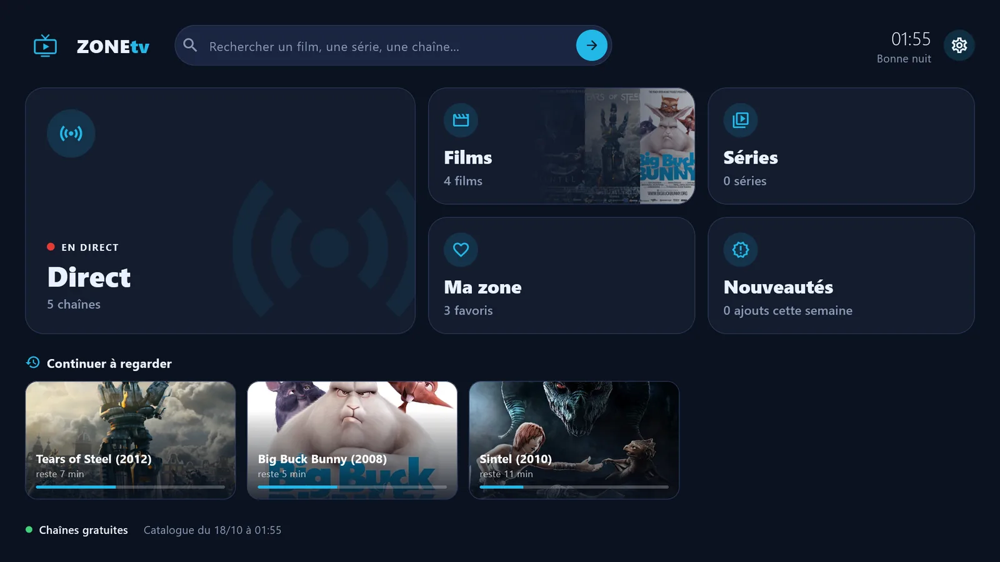
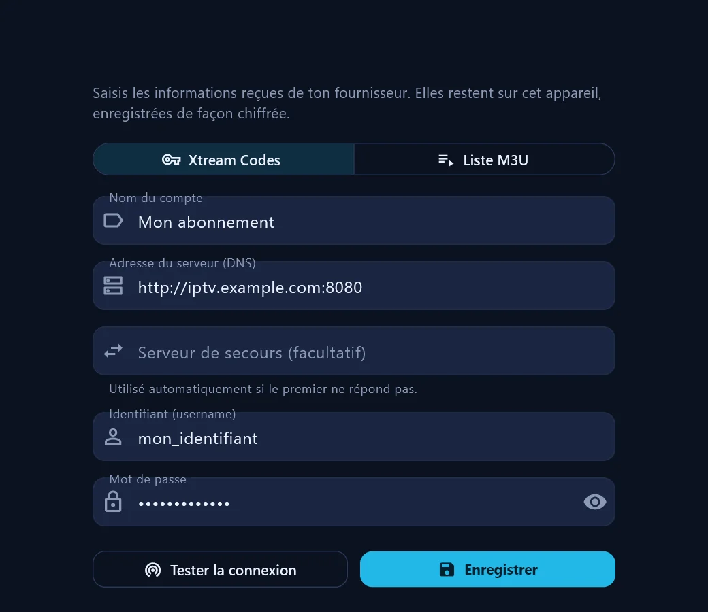
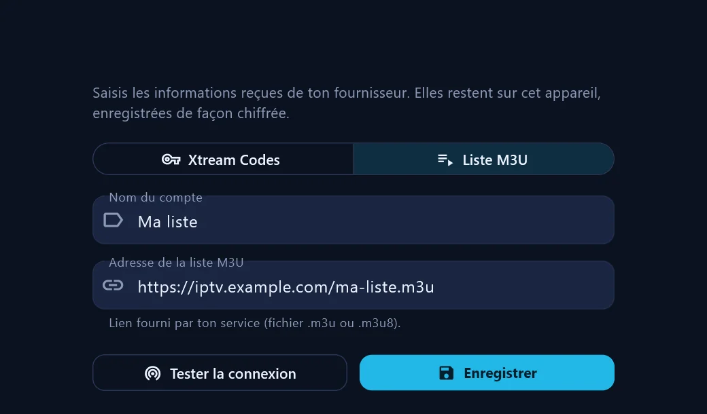

Accueil en zones
Direct, Films, Séries, Nouveautés, Ma zone et Recherche : chaque chose à sa place.
Gratuit · Windows 10 et 11
ZONEtv est un lecteur IPTV moderne pour Windows. Tes chaînes en direct, tes films et tes séries, organisés en zones claires, avec un vrai lecteur : reprise de lecture, épisode suivant, « Passer l'intro ».

Fonctionnalités
Direct, Films, Séries, Nouveautés, Ma zone et Recherche : chaque chose à sa place.
La chaîne se lance dans l'aperçu, avec l'émission en cours et les suivantes.
Reprends un film ou un épisode là où tu t'étais arrêté, depuis « Continuer à regarder ».
Boutons « Passer le résumé » et « Passer l'intro », et épisode suivant automatique.
Choisis la langue audio et les sous-titres, avec la taille qui te convient.
Survole la barre de lecture : une image te montre où tu vas arriver.
Garde tes chaînes préférées dans Ma zone et cherche dans tout le catalogue.
Identifiants chiffrés par Windows. Aucune publicité, aucun suivi.
Captures d'écran
Captures réalisées avec des chaînes gratuites officielles et des films libres de la Blender Foundation.
Comment ça marche
Gratuitement, depuis le Microsoft Store. Les mises à jour arrivent toutes seules.
Saisis ton compte Xtream Codes ou l'adresse de ta liste M3U (voir comment). Tes identifiants restent sur ton PC.
Le catalogue se range tout seul en zones. Choisis, lance, profite.
Se connecter
Au premier lancement, ZONEtv ouvre l'écran « Ajouter un compte ». Tu peux en ajouter d'autres à tout moment dans Paramètres > Comptes > Ajouter. Choisis le type qui correspond aux informations reçues de ton fournisseur.

http://exemple.com:8080.
.m3u ou .m3u8.Les valeurs affichées sont des exemples. Tes identifiants restent sur ton ordinateur, chiffrés par Windows.
FAQ
Oui. ZONEtv se télécharge gratuitement sur le Microsoft Store, sans publicité.
Non. ZONEtv est uniquement un lecteur, comme un lecteur vidéo. Il lit le contenu du service IPTV que tu possèdes déjà et que tu ajoutes toi-même.
Les services qui fournissent un compte Xtream Codes (adresse du serveur, identifiant, mot de passe) ou une liste M3U (une adresse web en .m3u ou .m3u8).
Sur les PC sous Windows 10 (version 1809 ou plus récente) et Windows 11. Pour l'afficher sur ta télé, tu peux brancher ton PC en HDMI ou utiliser la diffusion sans fil (touches Windows + K).
Oui. Ils sont chiffrés par Windows et restent sur ton ordinateur. ZONEtv n'envoie aucune donnée personnelle à son développeur ni à des tiers. Plus de détails dans la politique de confidentialité.
Oui. Ajoute autant de comptes que tu veux dans les Paramètres et passe de l'un à l'autre en un clic.